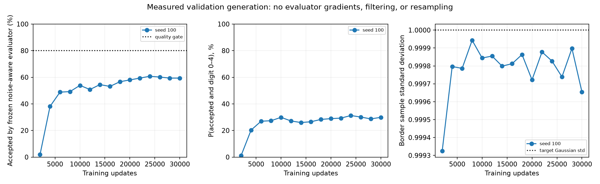
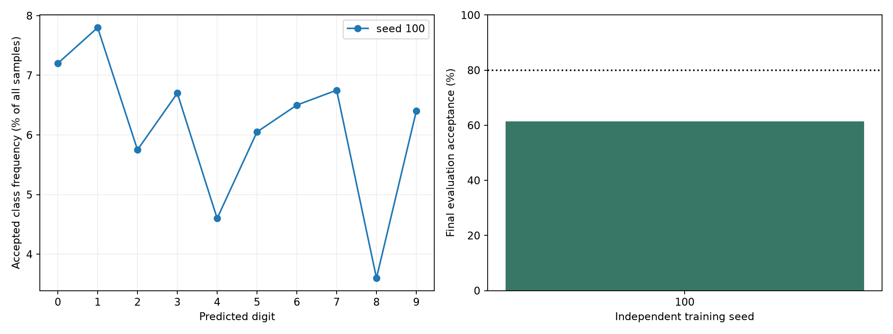
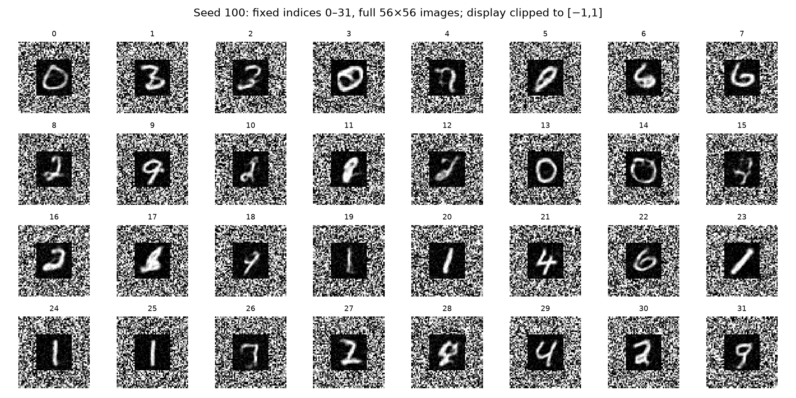

Inspect fixed-noise center crops
Each grid uses fixed indices 0–63. × indicates rejection by the frozen noise-aware evaluator.
FLOW STUDY · GENERATOR REPAIR · MEASURED DATA
Shared MLP residual plus a full-rank time-conditioned pixel path. The noise-aware evaluator is frozen. No evaluator gradients, filtering, or resampling.
stopped_shared_mlp_quality_gate · 348.2 GPU-process seconds
Readable report · Raw measurements · Curves CSV · Protocol
| Seed | Training updates | Accepted | Invalid | Border mean / std |
|---|---|---|---|---|
| 100 | 30,000 | 61.35% | 38.65% | 0.001 / 1.000 |
All 2,000 outputs per model remain in the denominator. The prior failed model scored 2.15% with the same evaluator.


Each grid uses fixed indices 0–63. × indicates rejection by the frozen noise-aware evaluator.

These scores establish generator feasibility only. Acceptance remains a proxy; inspect individual images and class coverage. Border marginal mean/std do not establish independence. Teacher-specific transfer requires its own paired teachers, students, and controls.